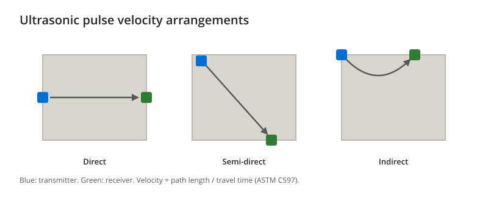

Ultrasonic pulse velocity
In one sentence: ultrasonic pulse velocity (UPV) times a sound pulse traveling through the concrete; good, dense concrete carries it fast, and cracks, voids and poor concrete slow it down.

How it works
A transmitter and a receiver are pressed against the concrete with a coupling gel. The instrument measures the travel time of the pulse; velocity is the path length divided by the time. Standardized in ASTM C597.
Arrangements
- Direct: transducers on opposite faces. Best accuracy.
- Semi-direct: on adjacent faces, at a corner.
- Indirect (surface): both on the same face, at several spacings. Useful for estimating crack depth or a damaged surface layer, but less precise.
Reading the results
Rough guidance often quoted for normal concrete:
| Velocity (km/s) | Quality |
|---|---|
| Above 4.5 | Excellent |
| 3.5 to 4.5 | Good |
| 3.0 to 3.5 | Doubtful |
| Below 3.0 | Poor |
Treat this as a starting point. Aggregate type, moisture and reinforcement change the velocity, so compare readings within the same structure, on a grid, rather than against a table.
Good uses
- Finding voids, honeycombing and cracked zones inside members.
- Checking uniformity across a structure or after fire damage.
- Estimating crack depth with the indirect method.
- With the Rebound hammer and cores, estimating strength.
Watch out for
- Bars along the path: steel carries the pulse faster and makes the concrete look better than it is. Keep the path away from bars running parallel to it.
- Poor coupling on rough surfaces.
- Wet concrete reads faster than dry.
Common mistakes
- Reading a single velocity against a quality table.
- Measuring along a reinforcing bar.
- Not recording the path length accurately.